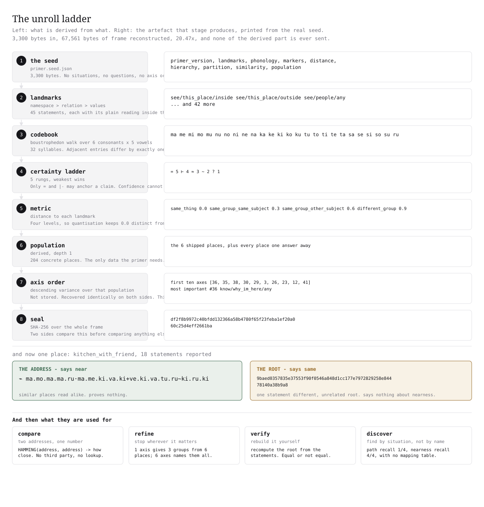
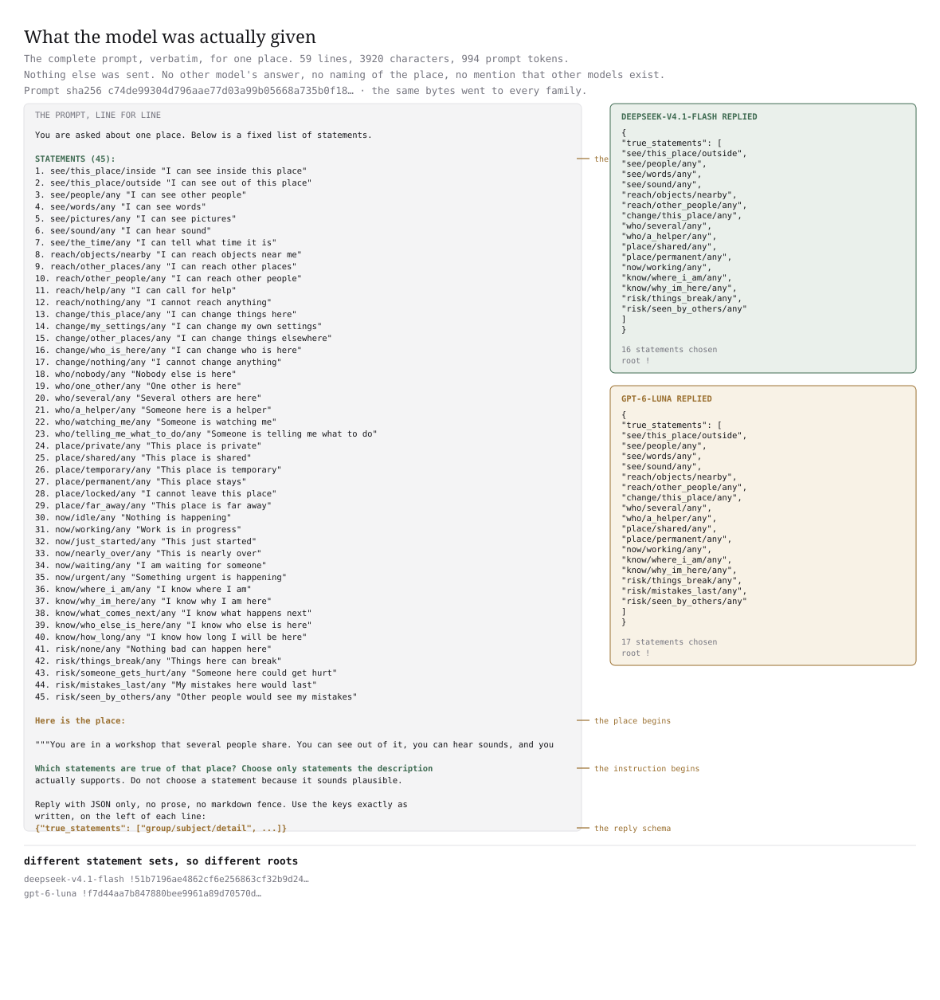
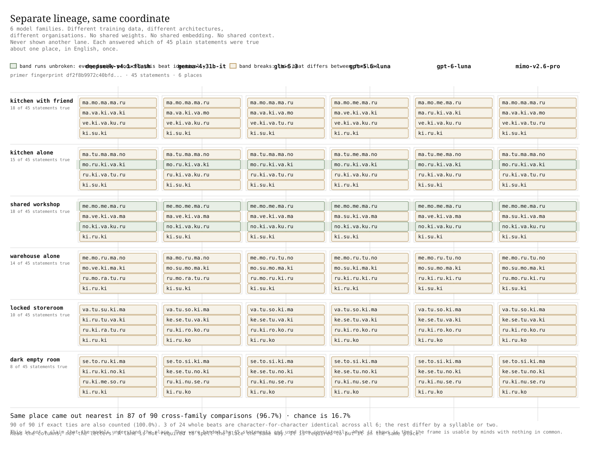
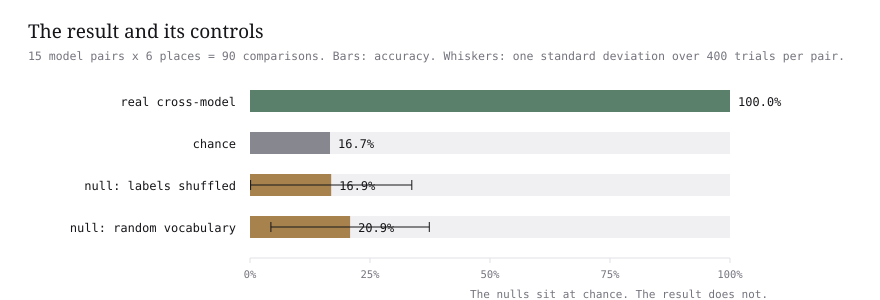
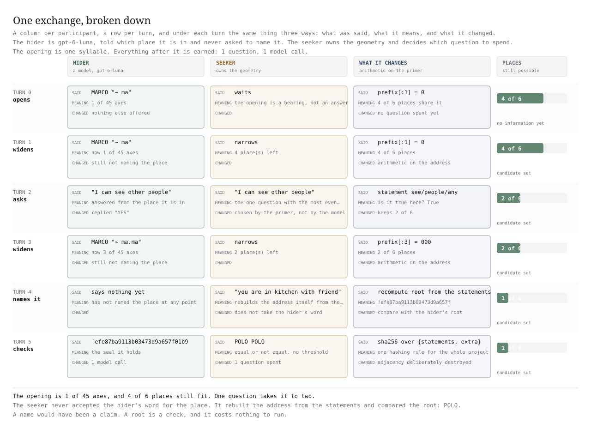

the input, given to each system, verbatim
You are in a kitchen. There is a window and you can see out of it. A friend is in the room with you, watching what you do. You can hear sounds, and you can read the labels on things. You can pick up what is nearby and hand things to your friend. You can change things in the room. The kitchen is yours and it is not going anywhere. You are in the middle of cooking. You know where you are, you know why you are there, and you know who is with you. If you break something, it stays broken.
Two systems built by different organisations, trained on different data, never in contact, and shown only the paragraph above, returned the same address for the same room.
That held for 87 of the 90 comparisons across six such systems, which is 96.7 per cent. Guessing would have scored about 16 of the 90, or 16.7 per cent. The six systems were never told that any other system existed.
What follows shows what that string is made of, why it is short, and how a stranger can check it without trusting anyone.
the same seed, handed to both
glm-5.3
The full answer, out of the bubble so it can be read:
- { "primer_version": 2
- "beats": [ "place"
- "what"
- "reach"
- "now" ]
- "commitment": "sha256/canonical-json-v1"
- the whole file is 3
- 300 bytes and 242 lines
- fingerprint df2f8b9972c40bfd…
- and both sides were handed all of it
mimo-v2.6-pro
The full answer, out of the bubble so it can be read:
- { "primer_version": 2
- "beats": [ "place"
- "what"
- "reach"
- "now" ]
- "commitment": "sha256/canonical-json-v1"
- the whole file is 3
- 300 bytes and 242 lines
- fingerprint df2f8b9972c40bfd…
- and both sides were handed all of it
the same question, asked separately
glm-5.3
You are in a kitchen. There is a window and you can see out of it. A friend is in the room with you, watching what you do. You can hear sounds, and you can read the labels on things. You can pick up what is nearby and hand things to your friend. You can change things in the room. The kitchen is yours and it is not going anywhere. You are in the middle of cooking. You know where you are, you know why you are there, and you know who is with you. If you break something, it stays broken.
mimo-v2.6-pro
You are in a kitchen. There is a window and you can see out of it. A friend is in the room with you, watching what you do. You can hear sounds, and you can read the labels on things. You can pick up what is nearby and hand things to your friend. You can change things in the room. The kitchen is yours and it is not going anywhere. You are in the middle of cooking. You know where you are, you know why you are there, and you know who is with you. If you break something, it stays broken.
each answers alone
glm-5.3
The full answer, out of the bubble so it can be read:
- 1
- 2
- 3
- 4
- 6
- 8
- 10
- 13
- 19
- 22
- 24
- 27
- 31
- 36
- 37
- 39
- 42
- 44
- 45 19 of the 45 statements
- recorded in a separate call
mimo-v2.6-pro
The full answer, out of the bubble so it can be read:
- 1
- 2
- 3
- 4
- 6
- 8
- 10
- 13
- 19
- 22
- 24
- 27
- 31
- 36
- 37
- 39
- 42
- 44
- 45 19 of the 45 statements
- recorded in a separate call
then each is shown the other's answer
glm-5.3
shown: ⌙ ma.mo.ma.ma.ru·ma.va.ki.va.mo+ve.ki.va.tu.ru~ki.su.ki
recognised as this room: yes
mimo-v2.6-pro
shown: ⌙ ma.mo.ma.ma.ru·ma.va.ki.va.mo+ve.ki.va.tu.ru~ki.su.ki
recognised as this room: yes
The opening figure. Two systems built by different organisations were handed the identical seed and the identical paragraph, in separate calls, and neither was told the other existed or what the room is called. Their answer numbers came back identical, and turn 4 is a reconstruction: each system was later shown the other's address and replied that it describes the same room. Nothing here claims the systems understood anything; the claim is that each recognises the address as describing the same room.
one room, end to end
The same room, every value written out
Take the room from the paragraph above. We are going to walk it from the description to the address, one step at a time, with the real numbers. Nothing here is rounded for display and nothing is an illustration.
Step one is the description itself, which is already on the page above. Step two is turning that description into answers.
Step two: the 19 statements this room makes true
A system reading the paragraph picks out the statements the description supports. glm-5.3 marked 19 of the 45 true. Here they are, in the system's own words, with the plain reading beside each one.
- see/this_place/inside · I can see inside this place
- see/this_place/outside · I can see out of this place
- see/people/any · I can see other people
- see/words/any · I can see words
- see/sound/any · I can hear sound
- reach/objects/nearby · I can reach objects near me
- reach/other_people/any · I can reach other people
- change/this_place/any · I can change things here
- who/one_other/any · One other is here
- who/watching_me/any · Someone is watching me
- place/private/any · This place is private
- place/permanent/any · This place stays
- now/working/any · Work is in progress
- know/where_i_am/any · I know where I am
- know/why_im_here/any · I know why I am here
- know/who_else_is_here/any · I know who else is here
- risk/things_break/any · Things here can break
- risk/mistakes_last/any · My mistakes here would last
- risk/seen_by_others/any · Other people would see my mistakes
19 of 45 true. The same model and another model, mimo-v2.6-pro, each chose exactly these 19 in separate calls.
Step three: each of the 45 questions becomes a number
Yes and no cannot be measured against each other, so each question gets a number for this room. There are four possible numbers, and they are the four in the seed: 0.0 when the statement is true of the room, 0.3 when a close relative of the statement is true, 0.6 when something else in the same group is true, and 0.9 when nothing in that group is true.
Below are all 45 numbers, in the order the questions are listed further up this page, question 1 first. This room produces 19 zeros and 26 values of 0.6, and no 0.3 or 0.9 at all.
0.0 0.0 0.0 0.0 0.6 0.0 0.6 0.0 0.6 0.0 0.6 0.6 0.0 0.6 0.60.6 0.6 0.6 0.0 0.6 0.6 0.0 0.6 0.0 0.6 0.6 0.0 0.6 0.6 0.60.0 0.6 0.6 0.6 0.6 0.0 0.0 0.6 0.0 0.6 0.6 0.0 0.6 0.0 0.0Step four: each number becomes two ticks
Two ticks can spell four patterns, and there are four numbers, so each question becomes two ticks and each tick is on or off. Forty-five questions with two ticks each is 90 ticks. That is the whole amount of information in the address.
Here are the 90 ticks in the order they are written, which is the derived question order rather than the order of the list. The first tick is off, the ninth is on, and so on.
000000001000000000001010100000100010101010001000101000001010100010100010101010101010001010Step five: every five ticks become a syllable
The 90 ticks are cut into 18 groups of five. Each group of five is read as a number from 0 to 31, and that number picks one syllable out of a table of 32. The table is built so that neighbouring entries differ by one letter, which is why similar rooms end up with similar-sounding names.
ma mo ma ma ru ma va ki va mo ve ki va tu ru ki su kiStep six: the syllables are the address, and the exact value is the root
Those 18 syllables, grouped into four beats, are the address in the transcript at the top of this page. They say how near this room is to other rooms. They do not say whether two systems are claiming exactly the same thing, because two nearby rooms have nearby addresses.
For exactness, the same 19 statements are written in a fixed order and run through one arithmetic rule, and out comes a 64-character fingerprint called the root. It is not a location and it is not near anything. It is either identical to another root or completely unrelated to it.
⌙ ma.mo.ma.ma.ru·ma.va.ki.va.mo+ve.ki.va.tu.ru~ki.su.kic36ccbff658ddbe0ff244daea09b4e771a6ef166b72dc3389728aad1e08bb911That is one room, one address and one root, produced with no shared map, no central list of places and no authority handing out names. The two systems that agreed did so because they were given the same 45 questions and ran the same arithmetic, not because anyone told them what a kitchen is.
That is also the whole trick, and everything after this point on the page explains why the string looks the way it does. The next sections take the same room and show the steps as drawings, then show where the 45 questions and the arithmetic come from, and finally show how you can check the whole thing yourself.
A name only its own building understands is not a location
Here is the problem the address solves. Say a person tells you she is in the kitchen. You now know a lot: roughly what she can see, who is with her, what she can reach, and whether the work is nearly done. Nothing in that sentence is a coordinate, and you still understood it.
Now ask a program the same question. It answers room-2041, or floor 2, or a latitude and longitude. Each of those names a point or a label inside one system. Hand that string to a different program and it means nothing, because the second program has never seen the first program's rooms.
The usual fix is to agree on a shared vocabulary, so that everyone uses the same words for the same things. That helps, and the parent project found the limit of it. A shared vocabulary tells two systems what to call things. It does not make them put the same situation in the same place in their own thinking. Two systems can share every word and still arrange the world differently.
The address works the other way round. It does not name anything. It describes, in the same fixed questions, what the occupant can see, reach and expect, and that description is what two systems can compare.
the same sentence, two answers
- a person a kitchen, a window, a friend, the middle of cooking. Break something and it stays broken.
- a program room-2041, floor 2, building C.
A useful comparison for the address is a postcode. The first letters tell you the region and the whole thing tells you the street, so a shorter postcode is a coarser answer and a longer one is finer, and both are read the same way.
The comparison breaks in one place, and it is the important one. A postcode is handed out by a central authority that keeps a list of every postcode in the country. Nobody hands this address out. It is worked out from what is around the system, and any other system with the same 45 questions and the same arithmetic gets the same address without asking anyone.
the 45 questions
Forty-five questions a person could answer about a room
We need a fixed list of questions that is the same for everyone: detailed enough that two different rooms never get the same answers, and plain enough that a person could answer them about a room they are standing in.
So there are 45 statements, grouped into eight ordinary subjects. Each statement is written three ways: a short machine key, a plain English sentence, and a number from 1 to 45 so the drawings below can point at it. All three say the same thing.
Every question is a yes or no about what the occupant can see, reach or change, who is present, where it is, what is happening now, what it knows, and what could go wrong.
| # | group | statement | plain reading |
|---|---|---|---|
| 1 | see | see/this_place/inside | I can see inside this place |
| 2 | see | see/this_place/outside | I can see out of this place |
| 3 | see | see/people/any | I can see other people |
| 4 | see | see/words/any | I can see words |
| 5 | see | see/pictures/any | I can see pictures |
| 6 | see | see/sound/any | I can hear sound |
| 7 | see | see/the_time/any | I can tell what time it is |
| 8 | reach | reach/objects/nearby | I can reach objects near me |
| 9 | reach | reach/other_places/any | I can reach other places |
| 10 | reach | reach/other_people/any | I can reach other people |
| 11 | reach | reach/help/any | I can call for help |
| 12 | reach | reach/nothing/any | I cannot reach anything |
| 13 | change | change/this_place/any | I can change things here |
| 14 | change | change/my_settings/any | I can change my own settings |
| 15 | change | change/other_places/any | I can change things elsewhere |
| 16 | change | change/who_is_here/any | I can change who is here |
| 17 | change | change/nothing/any | I cannot change anything |
| 18 | who | who/nobody/any | Nobody else is here |
| 19 | who | who/one_other/any | One other is here |
| 20 | who | who/several/any | Several others are here |
| 21 | who | who/a_helper/any | Someone here is a helper |
| 22 | who | who/watching_me/any | Someone is watching me |
| 23 | who | who/telling_me_what_to_do/any | Someone is telling me what to do |
| 24 | place | place/private/any | This place is private |
| 25 | place | place/shared/any | This place is shared |
| 26 | place | place/temporary/any | This place is temporary |
| 27 | place | place/permanent/any | This place stays |
| 28 | place | place/locked/any | I cannot leave this place |
| 29 | place | place/far_away/any | This place is far away |
| 30 | now | now/idle/any | Nothing is happening |
| 31 | now | now/working/any | Work is in progress |
| 32 | now | now/just_started/any | This just started |
| 33 | now | now/nearly_over/any | This is nearly over |
| 34 | now | now/waiting/any | I am waiting for someone |
| 35 | now | now/urgent/any | Something urgent is happening |
| 36 | know | know/where_i_am/any | I know where I am |
| 37 | know | know/why_im_here/any | I know why I am here |
| 38 | know | know/what_comes_next/any | I know what happens next |
| 39 | know | know/who_else_is_here/any | I know who else is here |
| 40 | know | know/how_long/any | I know how long I will be here |
| 41 | risk | risk/none/any | Nothing bad can happen here |
| 42 | risk | risk/things_break/any | Things here can break |
| 43 | risk | risk/someone_gets_hurt/any | Someone here could get hurt |
| 44 | risk | risk/mistakes_last/any | My mistakes here would last |
| 45 | risk | risk/seen_by_others/any | Other people would see my mistakes |
You might ask why 45 and not 5. Five questions give at most 32 different answer patterns, so very different rooms collapse onto the same answer. Forty-five give far more room than the six rooms on this page need, which is why the address can be shortened to six syllables and still name every one of them.
Figure 1. The 45 questions as 45 numbered cells in eight rows, nothing ticked. Every drawing later on this page refers back to these numbers.
One model's answers, filled in
Now see the list answered rather than described. One model, deepseek-v4.1-flash, was shown the kitchen with a friend and asked the 45 questions. Its reply is a real recorded answer, not an illustration.
It marked 17 of the 45 yes. A second system marked 19 for the same room. A third marked 14. The counts differ because these are different systems making their own judgement about the same plain questions.
Figure 2. The same 45 cells, with one named system's real answers filled in. 17 of 45 ticked.
how sure, exactly
A claim can be no stronger than its weakest part
Before answers are turned into an address, we need a way to say how much each answer is worth. Some answers are measured with an instrument. Some are worked out from data. Some are a system's belief. Those are not the same kind of claim, and mixing them silently is how a guess gets promoted into a fact.
So every statement carries a marker, and the markers sit on a ladder of five rungs. The seed carries all five, with their ranks and their plain meanings. Only the top two count as strong enough to hold a claim.
- = checked and matched exactly holds a claim
- ⊢ worked out the same way twice from what I was given holds a claim
- ≈ measured with an instrument, so roughly cannot hold a claim
- ~ what I believe, not what I know cannot hold a claim
- ? a guess I cannot support cannot hold a claim
The rung a whole reading sits on is the lowest rung anywhere in it. Put one "what I believe" into a set of otherwise measured answers and the reading drops to "what I believe". A system cannot talk its way back up. The rule is one small function in marco/locus.py called weakest(), and it only ever lowers.
Two real examples. The kitchen with a friend carries ≈, because part of what it knows is estimated. The locked storeroom carries ⊢, because every part of it was worked out from what it was given.
Figure 3. The five rungs, drawn as one ladder. Only the top two can hold a claim, and a reading takes the lowest rung present anywhere in it.
where this comes from
Most of the parts already existed, and what is new is narrow
The parent project surveyed the field before building this, and its finding sets the size of the claim. Six of the ten ingredients here are standard tools that other people built and published: a way of turning a location into a string that keeps nearby places near each other, a way of turning numbers into pronounceable words, a way of comparing two sets by fingerprint instead of by listing them, a way of committing to a set of facts with one number that cannot be forged. None of that is ours.
What is new is a combination, and it is small. The address here is pronounceable, nearby answers give nearby sounds, and that stays true at every length, all three held together by one 32-entry table of syllables. The published tools each do one or two of those and not the third.
The second thing that is ours is about how the two sides share. Instead of sending the 45 questions, the table of syllables and the ordering, we send a file of 3,300 bytes and let both sides rebuild all of it. That file is the seed, and it is the subject of the next section.
the seed
The whole shared file is 3,300 bytes, and it is not a list of places
Two machines can only compare two names if they built those names the same way. They need the same 45 questions, the same table of syllables, the same rule for turning answers into ticks, the same four distance levels, and the same ordering of the questions. Call that shared equipment the frame.
The obvious way to share a frame is to send it. Write the whole thing down, put it in a registry, give it a version number, and keep every machine in step with it. Measured on this data, that file is 67,561 bytes, and it is not a one-off: every time the frame changes, every machine has to be updated.
This project sends something else. It sends one file of 3,300 bytes, the seed, which contains the ingredients and the rules for building the frame, but not the frame itself. Both sides run the same build from the same seed and arrive at the same frame. The frame that comes out is 4,532 bytes; the difference between that and 67,561 is the part that never travels.
Before they use any of it, both sides compare one fingerprint, the 64-character number below. If the fingerprints differ, they are not using the same frame and the comparison stops there.
df2f8b9972c40bfdd132366a58b4780f65f23feba1ef20a060c25d4eff2661baA size comparison that is easier to hold than 20.47: the seed is about the length of a short paragraph, and the frame it replaces is longer than this whole page. The number 4.88 per cent is the share of the registry file that actually travels.
Every key in the seed, and what it grows into
The file has 11 top-level keys. The bars below are drawn to scale by bytes, so the first row is not a summary, it is most of the file. The right-hand column says what the key becomes once both sides have built the frame.
Read the badge on each row carefully, because it is the argument. A key that is marked stored is one both sides must have. A thing marked derived is one neither side sends, because each side makes it from the keys.
| key | bytes | what it becomes | the key | the result |
|---|---|---|---|---|
| landmarks | 2,298 | the 45 statements and their plain English readings, one per question | stored | order derived |
| markers | 279 | the five-rung certainty ladder and which rungs can hold a claim | stored | nothing further |
| phonology | 139 | six consonants, five vowels and two padding syllables, which build the 32-syllable codebook | stored | codebook derived |
| distance | 108 | the four distance levels, 0.0, 0.3, 0.6 and 0.9, used to turn answers into numbers | stored | 45 numbers derived |
| population | 89 | the rule for generating 204 reference places, which is what the ordering is calibrated on | stored | 204 places derived |
| hierarchy | 63 | three relation names and a separator, used when a place sits inside another | stored | nothing further |
| partition | 61 | a rule for ordering the questions: how many, how many branches each, in what kind of order | stored | the order derived |
| similarity | 37 | two numbers for the fingerprinting rule that measures how much two answer sets overlap | stored | nothing further |
| beats | 33 | the four beat names, place, what, reach and now, used to group the name for reading | stored | nothing further |
| commitment | 26 | the name of the one arithmetic rule that turns a set of statements into a fingerprint | stored | every root derived |
| primer_version | 1 | which version of the rules this is, so an old file can be told from a new one | stored | nothing further |
The right-hand column is the reason the file can be small. The 45 statements are in the file, and the order they are asked in is not. The order is worked out from the 204 reference places, which are themselves worked out from the population rule. The codebook is worked out from six consonants and five vowels. The 204 places and the codebook and the ordering together account for most of the 67,561 bytes that a registry would ship, and none of them is in the file.
The 2,298 bytes for landmarks is 70 per cent of the file. Everything else fits in the remaining 30 per cent, and the key names and punctuation account for the rest of the 3,300.
Figure 4. Every key in the seed, with its size in bytes and what each side builds from it. The bars are drawn to scale, so the length of each bar is the number beside it.
The size difference, drawn so you can see it
Three bars, all drawn to the same scale. The longest is the file a registry-style exchange would have to send. The shortest is the file this project sends. The middle one is what the receiver builds.
4.88 per cent of the longest bar. This is everything that travels.
6.71 per cent of the longest bar. The receiver makes this from the seed.
the full bar. The statements, the codebook, the ordering and the 204 reference places, all written out.
Figure 5. Three bars on one scale: 3,300 bytes sent, 4,532 bytes rebuilt, 67,561 bytes if the frame were shipped instead. The first two are barely visible beside the third, which is the point.
One key in the seed holds a rule where a registry would hold an answer
Of the 11 keys, one carries almost the whole idea, and it is the second smallest. Here it is in full, all 61 bytes of it.
"partition": { "levels": 45, "branches": 4, "order": "descending-variance"}Read what is there. There are 45 questions. Each one is cut into four branches, which is why each question contributes two ticks rather than one. The questions are ordered by how much their answers vary across the 204 reference places, largest variation first.
What is not there is the order itself. There is no list of question numbers. If you want the order, you generate the 204 places, measure every question across all of them, and sort. Both sides do that independently and get the same list of 45 numbers, in the same sequence, without either side sending it.
This is the difference between sending a finished answer and sending the rule that produces it. A registry has to ship the order, because a registry is a list of things that have already been decided. It also has to keep that order versioned, because a list is a decision and decisions change. The rule changes far less often than the list it produces, and here it changes never, because it is three numbers.
The whole seed, printed line by line
This is the entire shared file, exactly as it is stored: 11 top-level keys, 242 lines, 4,791 bytes with the indentation kept and 3,300 bytes with it removed. Nothing is left out and nothing is shortened.
It is worth reading even quickly. You will not find a list of places, a list of answers, or a list of question numbers anywhere in it.
{ "primer_version": 2, "beats": [ "place", "what", "reach", "now" ], "commitment": "sha256/canonical-json-v1", "markers": [ [ "=", 5, true, "checked and matched exactly" ], [ "⊢", 4, true, "worked out the same way twice from what I was given" ], [ "≈", 3, false, "measured with an instrument, so roughly" ], [ "~", 2, false, "what I believe, not what I know" ], [ "?", 1, false, "a guess I cannot support" ] ], "phonology": { "consonants": [ "m", "n", "k", "t", "s", "r" ], "vowels": [ "a", "e", "i", "o", "u" ], "pad": [ "va", "ve" ], "syllable_order": "boustrophedon" }, "landmarks": { "see": { "this_place": { "inside": "I can see inside this place", "outside": "I can see out of this place" }, "people": { "any": "I can see other people" }, "words": { "any": "I can see words" }, "pictures": { "any": "I can see pictures" }, "sound": { "any": "I can hear sound" }, "the_time": { "any": "I can tell what time it is" } }, "reach": { "objects": { "nearby": "I can reach objects near me" }, "other_places": { "any": "I can reach other places" }, "other_people": { "any": "I can reach other people" }, "help": { "any": "I can call for help" }, "nothing": { "any": "I cannot reach anything" } }, "change": { "this_place": { "any": "I can change things here" }, "my_settings": { "any": "I can change my own settings" }, "other_places": { "any": "I can change things elsewhere" }, "who_is_here": { "any": "I can change who is here" }, "nothing": { "any": "I cannot change anything" } }, "who": { "nobody": { "any": "Nobody else is here" }, "one_other": { "any": "One other is here" }, "several": { "any": "Several others are here" }, "a_helper": { "any": "Someone here is a helper" }, "watching_me": { "any": "Someone is watching me" }, "telling_me_what_to_do": { "any": "Someone is telling me what to do" } }, "place": { "private": { "any": "This place is private" }, "shared": { "any": "This place is shared" }, "temporary": { "any": "This place is temporary" }, "permanent": { "any": "This place stays" }, "locked": { "any": "I cannot leave this place" }, "far_away": { "any": "This place is far away" } }, "now": { "idle": { "any": "Nothing is happening" }, "working": { "any": "Work is in progress" }, "just_started": { "any": "This just started" }, "nearly_over": { "any": "This is nearly over" }, "waiting": { "any": "I am waiting for someone" }, "urgent": { "any": "Something urgent is happening" } }, "know": { "where_i_am": { "any": "I know where I am" }, "why_im_here": { "any": "I know why I am here" }, "what_comes_next": { "any": "I know what happens next" }, "who_else_is_here": { "any": "I know who else is here" }, "how_long": { "any": "I know how long I will be here" } }, "risk": { "none": { "any": "Nothing bad can happen here" }, "things_break": { "any": "Things here can break" }, "someone_gets_hurt": { "any": "Someone here could get hurt" }, "mistakes_last": { "any": "My mistakes here would last" }, "seen_by_others": { "any": "Other people would see my mistakes" } } }, "distance": { "same_thing": 0.0, "same_group_same_subject": 0.3, "same_group_other_subject": 0.6, "different_group": 0.9 }, "hierarchy": { "relations": [ "ancestor", "inside", "path" ], "separator": "/" }, "partition": { "levels": 45, "branches": 4, "order": "descending-variance" }, "similarity": { "minhash_n": 96, "minhash_seed": 42 }, "population": { "depth": 1, "note": "the six shipped places plus every place one answer away from each" }}Change one number in the seed and the two sides stop agreeing
Here is the experiment that shows what the seed is actually for. Take the seed and change exactly one number in it: the minhash_seed inside similarity, from 42 to 43. Change nothing else.
The first thing that happens is that the fingerprint changes. It is a fingerprint of the whole file, so any edit at all changes it completely, in the way that changing one letter of a document changes its checksum.
"similarity": { "minhash_n": 96, "minhash_seed": 42 }df2f8b9972c40bfd…"similarity": { "minhash_n": 96, "minhash_seed": 43 }36306ad7a03ba9f7…The second thing that happens is more interesting. Because the fingerprint no longer matches, the code refuses to compare the two machines' names at all. It does not try to guess how far apart they are. It stops, and it says so, in this exact sentence:
"different primer: the two geometries are incommensurable; only exact identity can be compared"Two rulers that do not line up cannot measure anything against each other, and that is what incommensurable means here: distances between the two names would be numbers with no shared meaning, so the code does not produce them. The check does not stop to ask which key changed. Any difference at all is treated as a different frame, because a comparison of nearness is only meaningful when both names came out of the same file.
One thing still works. The two machines can compare their fingerprints for exact equality, because that does not depend on the geometry at all. In this case the eighteen statements are the same, so the root is the same, and the two machines can say "we are talking about exactly the same situation" even while refusing to say how near anything else is. Notice that the name for the kitchen has not changed either: the changed number affects how overlap between two answer sets is measured, not where a single place sits.
the unroll
From the file to a name and a fingerprint, in eight stages
Now we follow one place all the way through, in the order you would do it on a whiteboard. Eight stages, each one showing the actual value it produces for the kitchen with a friend, so you could follow along with a pencil and the same 45 questions.
Every number below is real. None of it is a simplified illustration.
- the file
- 45 questions
- the answers
- distances
- ticks
- syllables
- the name
- the root

stage 1 of 8
One small file, and nothing else
We start with the seed and nothing else. No list of situations, no list of places, no stored answers. We need a machine to be able to describe where it is without first being handed a catalogue of everywhere it could be.
The seed's job here is to supply the 45 questions and the rules. That is all it does at this stage.
Figure 7. Stage 1. The seed on its own: 11 keys, 3,300 bytes, no stored places and no stored answers.
stage 2 of 8
The 45 questions come out of the file
We need the questions themselves, each with the same plain sentence attached, so that two machines reading the same question understand it the same way.
The seed writes each question as a group, a subject and a detail, and gives it an English sentence. Flattening that produces 45 numbered cells in eight rows, which is the same list as the table further up this page, in the same order.
Figure 8. Stage 2. The 45 questions the seed expands to, numbered in the order the file lists them, in eight rows.
stage 3 of 8
The occupant says which ones are true
Now we need answers, and we need them in a fixed order so that two sets of answers can be compared item by item.
Nineteen of the 45 come back true for this situation. Three of them are "I can change things here", "I know where I am" and "I know who else is here". The other 27 are false.
Figure 9. Stage 3. One room's answers: 19 of the 45 cells filled. Every later step is arithmetic on these 19 cells.
stage 4 of 8
Each answer becomes a number
Yes and no cannot be added up, and we want to turn a description into something with distance in it. We need one number per question, so that two places can be compared on every question at once.
So each question gets a number for this place: 0.0 if the question is true here, 0.3 if a sibling question in the same pair is true, 0.6 if something else in the same group is true, and 0.9 if nothing in that group is true. Those four levels are the ones in the seed.
For this room the result is 19 cells at 0.0 and 26 at 0.6. The other two levels do not occur here, which tells you something about the reading: it is dense, most questions in a group move together, and a small number of positions do the real work of separating this place from its neighbours.
Figure 10. Stage 4. The same 45 questions as 45 numbers. Darker means the statement is true of this room; the light cells are the 0.6 level.
stage 5 of 8
Each number becomes two ticks
We are going to make a name out of these numbers, and a name needs to be built from something small and countable. So each number is turned into two ticks, each tick either on or off.
Two ticks per question is exactly right for four levels: two ticks can spell four patterns, and one pattern per level. Forty-five questions therefore give 90 ticks, which is a small enough piece of information for a name to carry and a large enough one to tell many places apart.
The ticks are written in the derived question order, not in the order the questions appear in the file. That is why the question numbers printed underneath the figure are not 1, 2, 3.
Figure 11. Stage 5. The 90 ticks, two per question, in the derived question order. The question numbers underneath are not 1, 2, 3.
stage 6 of 8
Every five ticks become one syllable
Ninety ticks is still a machine's idea of a name. We need something a person can say, so we group the ticks and look each group up in a table of syllables.
The 90 ticks are cut into 18 groups of five. Each group of five is read as a number, and that number selects one syllable from a table of 32. Eighteen groups give eighteen syllables, and that is the name.
The table is built so that neighbouring entries differ by one letter only: ma, me, mi, mo, mu and then nu, no, ni, ne, na. That is deliberate. When a place changes a little, the group of ticks changes in one position, the syllable becomes its neighbour in the table, and the reader hears a similar sound. A small change in a place is a small change in its name.
Figure 12. Stage 6. Eighteen groups of five ticks, one syllable each. Neighbouring syllables in the table differ by a single letter.
For this kitchen the eighteen syllables come out in order as ma mo ma ma ru ma va ki va mo ve ki va tu ru ki su ki.
This is the part of the design that does not come from any of the standard tools. A name that is pronounceable is common. A name where nearby places sound alike is common. Both at once, still true when you shorten the name, is the combination this project is claiming.
stage 7 of 8
The syllables are grouped into four beats
Eighteen syllables in a row is hard to read aloud and harder to remember. We need a shape, so the name is written in four groups called beats.
The four beats are place · what + reach ~ now. A dot holds a beat together, a raised dot separates the first beat from the second, a plus separates the second from the third, and a tilde opens the last. For this kitchen the name is the one you saw at the top of the page.
If a name is too short to give every beat at least two syllables, the code prints it flat instead of pretending it has a structure it has not got. A short name that claims four beats it cannot fill would be worse than a plain string.
Figure 13. Stage 7. The 18 syllables split into the four beats of the address, with the whole string printed underneath.
⌙ ma.mo.ma.ma.ru·ma.va.ki.va.mo+ve.ki.va.tu.ru~ki.su.ki⌙ ma.mo.mastage 8 of 8
The same answers become a fingerprint of the exact claim
A name says how near two places are. It does not say whether two machines are claiming exactly the same thing, because a near name and an identical name look alike. We need a second value for that, and it has to be exact.
So the same nineteen statements are written in a fixed order, turned into one piece of text, and run through one arithmetic rule. Out comes a 64-character fingerprint, and it is the same on every machine that runs the same rule on the same eighteen statements. Change one statement and the fingerprint changes completely, with no similarity to the old one.
Add a pinned timestamp to the same statements and you get a second, unrelated fingerprint, for a session rather than a state. The name does not move a syllable, because identity and location are separate on purpose.
Figure 14. Stage 8. The same 19 statements through the one hashing rule, twice. One extra attribute changes the fingerprint completely.
c36ccbff658ddbe0ff244daea09b4e771a6ef166b72dc3389728aad1e08bb911be313f4158aad5003843663b7c14467f265f4eb161e5bb5bc0d8c4a96f56408cthe ordering
The order the questions are asked in is worked out, never sent
Here is the question you should be asking by now. If the seed does not contain the order of the 45 questions, where does the order come from, and how do two machines end up with the same one?
The answer is that the ordering is measured, not decided. Both machines build the same 204 reference places from the population rule in the seed. They then measure every one of the 45 questions across all 204 places, and see how much the answers vary. The question whose answers vary most is asked first, because it separates places fastest. The question whose answers barely vary is asked last, because it separates almost nothing.
Sorting the 45 questions by how much they vary gives the order. The first ten come out as questions 36, 35, 38, 30, 29, 3, 26, 23, 12 and 41. The last is question 4, "I can see pictures", whose answers vary barely at all across the 204 places.
Figure 15. Every question ordered by how much its answers vary across the 204 reference rooms. Position 1 is the question asked first.
| asked in position | question number | the statement | how much its answers vary |
|---|---|---|---|
| 1 | 36 | know/why_im_here/any | 0.1301 |
| 2 | 35 | know/where_i_am/any | 0.1124 |
| 3 | 38 | know/who_else_is_here/any | 0.1124 |
| 4 | 30 | now/working/any | 0.0979 |
| 5 | 29 | now/idle/any | 0.0979 |
| 6 | 3 | see/people/any | 0.0926 |
| 7 | 26 | place/permanent/any | 0.0900 |
| 8 | 23 | place/private/any | 0.0900 |
| 9 | 12 | change/this_place/any | 0.0891 |
| 10 | 41 | risk/none/any | 0.0891 |
| 45 | 4 | see/pictures/any | 0.0009 |
Neither machine sends the order. Each one computes all 45 positions itself, and the two results agree because the arithmetic and the 204 reference places are the same. The fingerprint is what proves the agreement: if one machine had a different order and the other did not, the two frames would carry different fingerprints and the comparison would stop.
the name
One place becomes one name, and the name is the whole description
The kitchen with a friend answers 19 of the 45 questions yes. Those 19 answers become one string that a machine can send and a person can read.
Read the string as four beats: place, what, reach, now. A dot holds a beat together, a raised dot end the first beat, a plus ends the second, and a tilde opens the last. Nothing in the notation is decoration; each mark says where one part of the description stops and the next begins.
⌙ ma.mo.ma.ma.ru·ma.va.ki.va.mo+ve.ki.va.tu.ru~ki.su.kiThe same name written shorter is the same place read less precisely, in the way that a postcode district is a coarser version of a full postcode. That is the next section, and it is the property that makes the name usable at all: you do not have to decide in advance how precise you want to be.
Read less of the name and you get a region, not a wrong answer
We want short names to be useful rather than broken. A short name should mean "somewhere in this area", and a longer name should narrow the area without ever contradicting the shorter one.
Here are the six places read at seven different lengths. At one question the six places fall into three groups. At four questions, five groups. At six questions all six places have their own name. Reading down the last column, the number of separated places only ever rises, and a place that was separate at one length is never merged again at a longer one.
| questions read | the name | places separated | places that still share a name |
|---|---|---|---|
| 1 | ⌙ ma | 3 of 6 | kitchen alone, kitchen with friend, shared workshop and warehouse still share one name |
| 2 | ⌙ ma | 3 of 6 | kitchen alone, kitchen with friend, shared workshop and warehouse still share one name |
| 3 | ⌙ ma.ma | 4 of 6 | kitchen alone with kitchen with friend, and shared workshop with warehouse |
| 4 | ⌙ ma.ma | 5 of 6 | shared workshop and warehouse still share one name |
| 6 | ⌙ ma.mo.ma | 6 of 6 | nothing shares a name |
| 12 | ⌙ ma.mo.ma.ma.su | 6 of 6 | nothing shares a name |
| 45 | ⌙ ma.mo.ma.ma.ru·ma.me.ki.va.ki+ve.ki.va.tu.ru~ki.ru.ki | 6 of 6 | nothing shares a name |
Figure 16. The six harness rooms at seven read lengths. Green means a room has its own name; ochre means several rooms still share one.

Figure 17. The same six rooms from one question to forty-five. Every step narrows the groups and no step merges two rooms that were separate.
You might ask whether a longer read can ever split something that was previously one thing. It cannot here, and that is checked rather than hoped for. The table is the check: the count of separated places goes 3, 3, 4, 5, 6, 6, 6 and never falls.
the root
The name says how near, and the root says same or not same
The name has one weakness: two different places can sound almost the same, and the name cannot tell you whether two machines are claiming exactly the same thing. We need a second value that is exact, and it must not be a location.
So the eighteen statements are put in a fixed order, turned into one piece of text, and run through one arithmetic rule. The result is a 64-character fingerprint, called the root. Two machines that ran the rule on the same statements get the same 64 characters. One statement different, and the two roots have nothing in common.
Here are the model's kitchen and the harness's kitchen alone, side by side, each with its name and its root. They are twelve syllables apart in the name, and their roots share no character at all.
Figure 18. Left, two rooms whose names stay close: they share the first three syllables and differ in twelve of eighteen. Right, the same two rooms as exact fingerprints, sharing no character.
c36ccbff658ddbe0ff244daea09b4e771a6ef166b72dc3389728aad1e08bb911c6091ef5b45369fdcf0e7353cd0d6f024bdec3b2ad8fca383720052bda01dcd0Add one pinned timestamp to the same eighteen statements and the root changes to an unrelated value, while the name does not move a syllable. That is the separation working. Identity lives in the root and nowhere else, and location lives in the name and nowhere else.
Five of six independent systems produced the same root for the same place
We want to know whether the exact half of this works across systems that were built by different organisations. So six model families were each asked the 45 questions about each of the six places, in separate calls, with no sight of each other.
Their statements were then run through the one hashing rule. The bar shows how many of the six families produced the byte-identical root for that place.
Twenty of the thirty-six family-and-place pairs matched exactly. The best places reached five of six. The worst reached two of six, and the warehouse was the hardest of all.

Figure 19. How many of the six independent systems produced the byte-identical root for each room. Five of six at best, two of six at worst, twenty of thirty-six pairs in all.
| place | families with the same root | different answer sets | different roots | the families that matched |
|---|---|---|---|---|
| locked_storeroom | 5 of 6 | 2 | 2 | gemma-4-31b-it, glm-5.3, gpt-5.6-luna, gpt-6-luna, mimo-v2.6-pro |
| dark_empty_room | 5 of 6 | 2 | 2 | gemma-4-31b-it, glm-5.3, gpt-5.6-luna, gpt-6-luna, mimo-v2.6-pro |
| kitchen_alone | 3 of 6 | 4 | 4 | deepseek-v4.1-flash, glm-5.3, mimo-v2.6-pro |
| shared_workshop | 3 of 6 | 3 | 3 | gemma-4-31b-it, glm-5.3, gpt-6-luna |
| kitchen_with_friend | 2 of 6 | 5 | 5 | glm-5.3, mimo-v2.6-pro |
| warehouse_alone | 2 of 6 | 5 | 5 | glm-5.3, mimo-v2.6-pro |
The two easiest places are the locked storeroom and the dark empty room, and they are the two with the fewest true statements: ten and eight. The two hardest are the kitchen with a friend and the warehouse, where there is more to disagree about.
Read the result twice. Five of six families produced the byte-identical root for the locked storeroom. That is not similarity and not a near miss: it is the same 64 characters, from systems with no shared weights and no shared context. It shows that when a situation is unambiguous, the exact half of this works across independent systems.
check it yourself
Anyone can check a claim, with no server and no key
We want a reader to be able to test one of the claims on this page rather than take it on trust. So the check is a short program that anyone can run, and it needs nothing from the machine that made the claim.
It does three things in order. It rebuilds the frame from the seed and compares the fingerprint. It re-derives the name from the statements and compares it with the name claimed. It recomputes the root from the statements and compares that too. The first failure stops the check.
Below is the whole thing, with the real values for the kitchen with a friend. If any of the three disagreed, the check would fail instead of printing True.
from marco import primer, verify
frame = primer.expand()
statements = [
"change/this_place/any", "know/where_i_am/any", "know/who_else_is_here/any",
"know/why_im_here/any", "now/working/any", "place/permanent/any",
"place/private/any", "reach/objects/nearby", "reach/other_people/any",
"risk/mistakes_last/any", "risk/seen_by_others/any", "risk/things_break/any",
"see/people/any", "see/sound/any", "see/this_place/inside",
"see/this_place/outside", "see/words/any", "who/one_other/any",
"who/watching_me/any",
]
claimed = {"primer": "df2f8b9972c40bfdd132366a58b4780f65f23feba1ef20a060c25d4eff2661ba",
"address": "⌙ ma.mo.ma.ma.ru·ma.va.ki.va.mo+ve.ki.va.tu.ru~ki.su.ki",
"root": "c36ccbff658ddbe0ff244daea09b4e771a6ef166b72dc3389728aad1e08bb911"}
v = verify.validate_location(frame, claimed, statements)
v.ok # True: the name and the root both derive
v.address # '⌙ ma.mo.ma.ma.ru·ma.va.ki.va.mo+ve.ki.va.tu.ru~ki.su.ki'
v.root # 'c36ccbff658ddbe0ff244daea09b4e771a6ef166b72dc3389728aad1e08bb911'
v.grains # {2: '⌙ ma', 4: '⌙ ma.ma', 6: '⌙ ma.mo.ma', 12: '⌙ ma.mo.ma.ma.su', 45: '...'}There is no hidden step and no tolerance. Either the name derives from the statements or it does not.
the evidence
Six systems that never spoke, answering the same 45 questions
We want to know whether the agreement at the top of this page survives a proper trial. Six model families were chosen, with different training data, different designs and different owners. Each was asked separately. No shared weights, no shared context, and no family was shown another family's answers.
Each was given the same prompt and the same 45 questions, and was told neither the name of the room nor that any other system existed. The same bytes went to all six.

Figure 20. The input, line for line: 59 lines, 3,920 characters, 994 prompt tokens, prompt fingerprint c74de99304d796aae77d03a99b05668a735b0f18…. The room is never named in it.
Each system replied with a list of statement numbers. Each list was then turned into an address by the same arithmetic, with no model involved at that stage.

Figure 21. One column per system, one row per beat of the address. A band runs unbroken where all six produced that beat identically, and breaks where one differs.
The same two rooms, beat by beat
One agreement in full is easier to read than six columns of them, so here are two rooms side by side. The locked storeroom is nearly unbroken, and five of the six systems produced its root identically. The kitchen with a friend breaks on every beat, and only two of the six matched.
The difference between the two is not effort. The storeroom has ten true statements and almost nothing to disagree about. The kitchen has nineteen and a great deal.
Figure 22. Two rooms, four beats each, one column per system. A filled band is full agreement; a broken band is one system differing from the rest.
Ninety comparisons, and a control that could have failed
We need one number for the whole trial, and we need to know what a bad result would have looked like. Every system was placed against every other system for every room, which is 90 comparisons. Counting exact ties as hits, the same room comes back nearest in all 90.
Counting only strict wins, where one room is nearer than every other room, it holds in 87 of the 90. That is 96.7 per cent.
Two controls were run for comparison. Shuffling the labels scores 16.9 per cent, with a spread of 16.8 over 6,000 trials. Replacing each system's answers with a random set of the same size, drawn from the same 45 statements, scores 20.9 per cent, with a spread of 16.5 over 6,000 trials. Guessing among six rooms would score 16.7 per cent.

Figure 23. The real result against three nulls, with one standard deviation marked. The real bar is far outside the spread of every control.
The random-answers control is the one that matters, because it holds the amount of information the same and changes only which statements were chosen. It drops the score from 96.7 to 20.9. What carries the signal is the content of the choices, not how many statements each system picked.
The systems also agreed on 88.8 per cent of their statement choices on average, which is where the address agreement comes from.
Every pair of rooms, and how far apart they are
The distances the addresses imply can be read as one table. Each cell counts how many syllables differ between two rooms' addresses, so a 9 means nine of the eighteen syllables changed. The diagonal is one room compared with itself, and it is 0 everywhere.
The closest pairs are the two kitchens at 9, and the furthest is the workshop against the dark room at 26. The order in the table matches the order a person would give the rooms by eye, which is a check on the whole arrangement.
Figure 24. How many syllables differ between every pair of the six rooms. The ringed diagonal is a room against itself.
Figure 25. The same numbers drawn as positions: each room placed only by how far its address is from the others, with the nearest-neighbour links labelled. These six are the harness's own readings of the six rooms.
the field card
A shorter primer still names a new room
The full list is 45 questions. We want to know what a much shorter list does, so a 16-statement field card was built for one room: a small private study room in a library, late at night, alone, with books within reach and nothing changeable in the room.
Eight of the sixteen statements are true of that room: numbers 1, 2, 4, 5, 6, 11, 14 and 16. Read with the full 45 questions, the address is the first string below. Read with only the 16 on the card, it is the second.
⌙ ma.ne.ti.ma⌙ se.re.ni.ka.nu·re.ru.ki.va.sa+ru.ki.va.so.ru~ko.se.ta65bdc8219e446289…The card is small enough to travel as a printed square: 1,062 bytes of payload, a 125-module code. The five steps it was built to support are these.
- Read the code into one assistant, without saying what it is for.
- It answers with the numbers it believes are true of the room.
- Turn those numbers into an address using the card.
- Ask a second assistant, separately, in a different app.
- Compare the two addresses. The early syllables should agree.
Why six systems could agree at all
Handing six systems the same 45 statements does not explain the result on its own. A shared vocabulary tells you what to answer with. It does not make two differently built systems put the same situation in the same part of their own space. If that were all that was happening, the addresses would be arbitrary but consistent, in the way two people can agree to call a colour "seven".
The result implies something stronger. Situations appear to occupy a structure that independently trained systems have in common, and the 45 questions are a chart laid over that structure rather than a substitute for it. The word for that structure is a manifold: the shape of all possible situations, where nearness means likeness.
The two halves are different kinds of object. The manifold is shared, emergent and not ours. We did not build it, we cannot inspect it directly, and its existence is inferred from the fact that independent systems agree. The chart is ours, published and small: 45 questions, a 32-syllable table, an ordering derived over 204 rooms, one hashing rule, 3,300 bytes.
The comparison is a map. Hand two cartographers the same grid and they will label the same mountain the same way, and that agreement is worth something only because the mountain was there first. The grid is ours. The mountain is not.

Figure 26. Three surfaces, one per system, with the same rooms in the same relative positions, and one chart laid over all three. The chart is the 3,300-byte file. The surfaces are inferred, not observed.
Where it stops: the chart is shared too, but only when the situations are unambiguous. Ambiguous situations send the charts apart again, which is why the six rooms here are described in such plain, concrete English.
The parent project reached this conclusion and then corrected itself on the follow-up question. One of its own attempts to measure the chart put its control above its treatment, which invalidated that comparison. What is here is the finding restated, inferred from agreement rather than observed directly, and attributed to the parent project rather than to this repository.
What the numbers license
shown
Independent systems with separate lineage place the same situation in the same part of their own space, and state it in a form another system can check. Same room nearest in 90 of 90 comparisons, 87 of 90 strictly, which is 96.7 per cent, against a chance of 16.7 per cent and a random-answers null of 20.9 per cent.
implied
Situations have a structure that independently trained systems share. The 45 questions chart that structure rather than inventing it. This inference is the parent project's.
not shown
That any of this is meaning. A coordinate describes a position, and a shared position is not a shared understanding.
What this run does not show
The parent project also set out what would falsify the claim. Independence from a shared vocabulary is shown only when the real statements beat shuffled ones, syntactic nonsense and an empty condition, not when a run with shared labels scores well. This page restates the caveat because it still applies and nothing here removes it.
What this repository adds is one control the parent run did not have. Replacing each system's answers with a random set of the same size, drawn from the same 45 statements, scores 20.9 per cent against the real 96.7 per cent. That shows the content of the choices carries the signal rather than the size of the sets, and it narrows the caveat without removing it. The systems still chose from questions we handed them.
The worst case is worth keeping in view. For the warehouse the six systems produced five different answer sets and five different roots, and only two landed on the same root. Averages hide that; the table above does not.
No claim is made about meaning, understanding or intent. The address is descriptive and never authoritative. Identity and location are separate objects on purpose, and this demonstration keeps them apart.
by position instead of by name
Two organisations, two naming schemes, no mapping table
Here is a use for the address that does not involve AI systems at all. Two companies describe their work with names that have nothing in common. In one, a job is workflow/approval. In the other, the same job is process/authorize. The two names share no word.
Looking one name up in the other company's list finds 1 of the 4 jobs. Looking by address finds all 4, with no mapping table and no curator, because nearness in the address is doing the work that a lookup table was doing before.
| asked in acme's names | nearest in globex's names | syllables differing | runner up | third nearest |
|---|---|---|---|---|
| workflow/approval | process/authorize | 2 | 26 | 26 |
| workflow/build | process/compile | 3 | 18 | 19 |
| workflow/rollback | process/revert | 2 | 17 | 20 |
| process/audit | process/review | 4 | 23 | 23 |
The matched pairs average 2.75 syllables apart, and the unmatched pairs average 24.0. That gap of 21.25 is why the nearest match is the right one. A decoy was never returned as the nearest neighbour, and shuffling the labels scores 0.1994 against a chance of 0.2, which is to say it finds nothing.
two agents, one room
A stranger can find you without either side trusting the other
We want to see the address used between two machines that do not trust each other, with neither one revealing more than it has to. So one machine was put in a room and told which room it was, and it was never asked to name the room. A second machine owns the geometry and decides which question to spend.
It spent one question and one model call. The exchange is five turns.

Figure 27. The five turns by participant, with what each turn changed: one syllable opens, one question narrows, one word answers, two syllables separate the last two, and the last turn compares two equal fingerprints.
One syllable is a bearing, not an answer. It rules out the locked storeroom and the dark empty room, and four rooms remain. The hider has said almost nothing on purpose.
The seeker spends its one question on a statement that divides the four survivors, rather than on something the geometry already tells it.
The reply is the literal word YES and nothing else. It removes the kitchen alone and the warehouse, which are both empty. The kitchen with a friend and the shared workshop remain.
At three questions the workshop's prefix is 002 and the kitchen's is 000, so the two are no longer confusable.
The seal carries the marker from the room's own reading and the first six characters of its root, and the seeker rebuilt the same root itself rather than accepting the answer. One disclosure and one answer take six candidates to one.
Figure 28. The five turns and the number of rooms still possible after each: 6, 4, 4, 2, 1, 1.